LangevinBarostat - Langevin-Hoover barostat Object¶
This is the barostat implementation to perform Langevin dynamics in a Hoover style extended system
according to the paper [Quigley04]. It includes corrections of Hoover approach which were introduced
by Martyna et al [Martyna94].
If LangevinBarostat is defined (as a property of integrator) the integration equations will be
modified. The volume of system  is introduced as a dynamical variable:
is introduced as a dynamical variable:
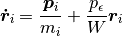
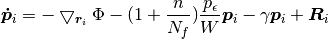
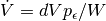
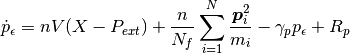
where volume has a fictitious mass  and associated momentum 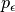,
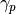 - friction coefficient,
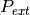 - external pressure and
and associated momentum 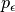,
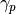 - friction coefficient,
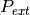 - external pressure and  - instantaneous pressure without white noise
contribution from thermostat,
- instantaneous pressure without white noise
contribution from thermostat,  - dimension, 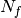 - degrees of freedom (if there
are no constrains and
- dimension, 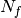 - degrees of freedom (if there
are no constrains and  is the number of particles in system 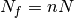).
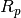 - values which are drawn from Gaussian distribution of zero mean and unit variance
scaled by
is the number of particles in system 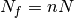).
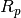 - values which are drawn from Gaussian distribution of zero mean and unit variance
scaled by
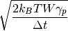
!IMPORTANT Terms 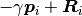 correspond to the termostat. They are not included here and will not be calculated if the Langevin Thermostat is not defined.
Example:
>>> rng = espressopp.esutil.RNG()
>>> langevinP = espressopp.integrator.LangevinBarostat(system, rng, desiredTemperature)
>>> langevinP.gammaP = 0.05
>>> langevinP.pressure = 1.0
>>> langevinP.mass = pow(10.0, 4)
>>> integrator.addExtension(langevinP)
!IMPORTANT This barostat is supposed to be run in a couple with thermostat in order to simulate the npt ensamble, because the term needs the temperature as a parameter.
Definition:
Properties:
langevinP.gammaP
The property ‘gammaP’ defines the friction coefficient .
langevinP.pressure
The property ‘pressure’ defines the external pressure .
langevinP.mass
The property ‘mass’ defines the fictitious mass
.
Methods:
setMassByFrequency( frequency )
Set the proper langevinP.mass using expression 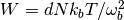, where frequency, 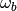, is the frequency of required volume fluctuations. The value of should be less then the lowest frequency which appears in the NVT temperature spectrum [Quigley04] in order to match the canonical distribution. 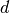 - dimensions,
- number of particles, 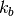 - Boltzmann constant,  - desired
temperature.
- desired
temperature.
NOTE The langevinP.mass can be set both directly and using the (setMassByFrequency( frequency ))
Adding to the integration:
>>> integrator.addExtension(langevinP)It will define Langevin-Hoover barostat as a property of integrator.
One more example:
>>> rngBaro = espressopp.esutil.RNG()
>>> lP = espressopp.integrator.LangevinBarostat(system, rngBaro, desiredTemperature)
>>> lP.gammaP = .5
>>> lP.pressure = 1.0
>>> lP.mass = pow(10.0, 5)
>>> integrator.addExtension(lP)
Canceling the barostat:
If one do not need the pressure regulation in system anymore or need to switch the ensamble or whatever :)
>>> # define barostat with parameters >>> rngBaro = espressopp.esutil.RNG() >>> lP = espressopp.integrator.LangevinBarostat(system, rngBaro, desiredTemperature) >>> lP.gammaP = .5 >>> lP.pressure = 1.0 >>> lP.mass = pow(10.0, 5) >>> integrator.langevinBarostat = lP >>> ... >>> # some runs >>> ... >>> # disconnect barostat >>> langevinBarostat.disconnect() >>> # the next runs will not include the modification of integration equationsConnecting the barostat back after the disconnection
>>> langevinBarostat.connect()
References:
| [Quigley04] | (1, 2)
|
| [Martyna94] |
|
-
espressopp.integrator.LangevinBarostat(system, rng, temperature)¶ Parameters: - system –
- rng –
- temperature –